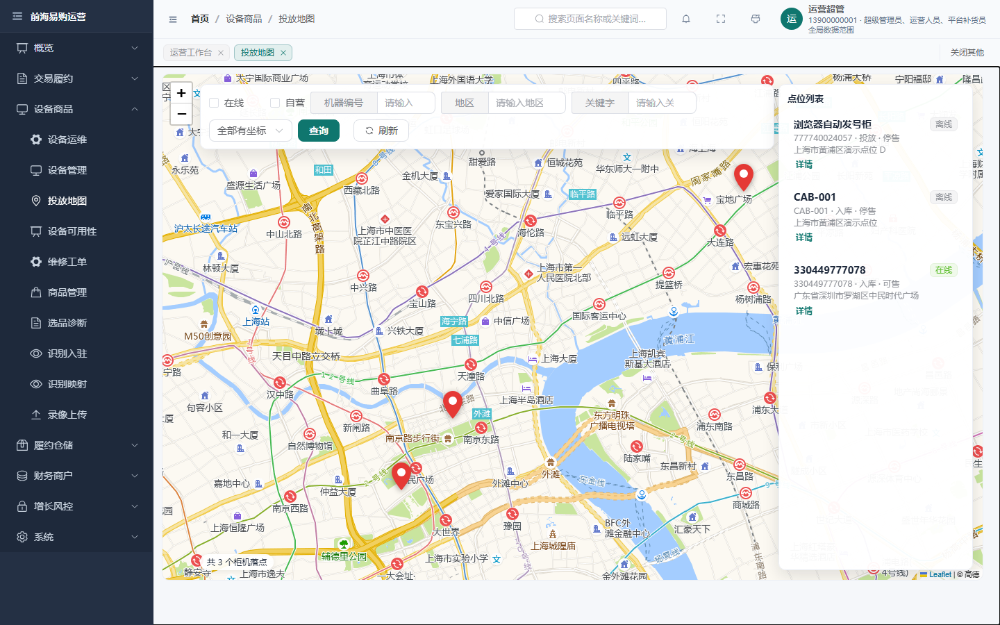
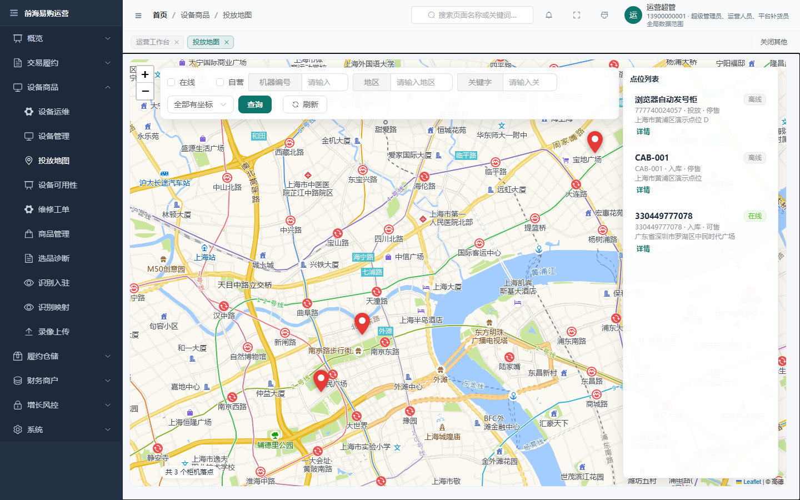

http://127.0.0.1:18080/admin/页面清单不手写：从 clients/admin-vue/src/router/index.ts 源码解析（按路由对象分块），避免人工清单漂移。
真浏览器：Chromium 加载运行中的服务（无任何路由拦截/接口 mock），登录后逐页访问、等待渲染稳定再采样。
判据（结果导向，只读几何，不写业务数据）
PAGE_HSCROLL 文档级横向溢出 · OVERLAP 同父流式块重叠（排除浮层）CLIPPED 内容被容器裁切 · TRUNCATED 文本省略号截断 · EMPTY 空渲染 · IMG_FAIL 图片失败CRUD_* 表格页专项：工具行/表头/首行/分页行零重叠、fill-flow 模式自洽pageerror / console error / HTTP ≥400共采样 71 路由 × 2 视口，全部归档截图。
现象：右上角「手机号 · 角色名」被省略号截断，1440 下少 83px、1092 下少 125px（几乎一半字段读不到）。
根因：AdminLayout.vue 的 .user-text 限宽 clamp(72px, 12vw, 180px)；而该字段自然宽 256px（按真实内容量取），顶栏右侧实测尚有约 500px 空白 → 限宽过保守。
修法：限宽放宽为 clamp(72px, 26vw, 280px)；并给三行文本补 title 属性（极窄视口仍可 hover 看全）。
现象：1092 窗口下顶栏搜索框显示「搜索页面名称或关键…」。
根因：GlobalSearch.vue 的 .search-trigger 宽 clamp(108px, 16vw, 220px)；图标+间距+内边距固定占 42px，占位文案自然宽 141px ⇒ 需 ≥183px，而 16vw 在 1100px 以下都小于 183 ⇒ 形成 900–1100px 的截断带（900 以下才切成纯图标）。
修法：下限抬到 190px（clamp(190px, 16vw, 220px)）。
现象：1440×900 下地图底边距可用底 留 40px 空白带；1092×606 下改公式后又越出（主区多一条「当前窗口较窄」提示条，占 40px+间距）。
根因：DeviceMapView.vue 用 height: clamp(320px, calc(100vh - 170px), 1200px) —— 100vh 减常数无法反映「顶栏 / 面包屑 / 标签栏 / 窄屏提示条 / 主区内边距」的实际占位（1440 顶偏移 106，1092 为 156）。
修法：改为 flex: 1 1 auto + 保留 min-height: 320px —— 让地图吃掉主区剩余空间（有富余就拉伸、无富余才压缩），彻底去掉魔法数字。


在修复后的运行栈上注入各处的旧值，判据必须变红：
| 判据 | 视口 | 修复后 | 注入旧值 | 判别力 |
|---|---|---|---|---|
| 顶栏 user-detail 溢出 | 1440×900 | 0px | 83px | ✓ 变红 |
| 顶栏 user-detail 溢出 | 1092×606 | 0px | 125px | ✓ 变红 |
| 搜索占位文案溢出 | 1092×606 | 0px | 10px | ✓ 变红 |
| 搜索占位文案溢出 | 1440×900 | 0px | 0px | — 该视口本就无此问题（自洽） |
| 地图底边 vs 可用底 | 1440×900 | 差 0（876/876） | 留白 40px | ✓ 变红 |
| 地图底边 vs 可用底 | 1092×606 | 差 0（582/582） | 溢出 10px | ✓ 变红 |
另：修复前用含窄屏提示条的真实页面实测，同一旧公式在 1092 下溢出达 50px ⇒ 说明该公式对顶部占位敏感、跨视口不可靠。
「仅省略号」= 命中项全部是 Element Plus 表格单元格的 ellipsis 省略（列宽设计使然），非布局缺陷；「干净」= 零命中、零运行时错误。
1440 视口：干净 45 页 · 仅省略号 26 页 · 需关注 0 页。 1092 视口：干净 43 页 · 仅省略号 28 页 · 需关注 0 页。 两档视口合计 JS 异常 0、HTTP 4xx/5xx 0、空渲染 0、横向溢出 0。
| 路由 | 标题 | 内容 | 文本量 | 1092 | 1440 | 判据码 | 运行时 | 视图文件 |
|---|---|---|---|---|---|---|---|---|
| dashboard | 运营工作台 | 1 表 | 1613 | 仅省略号 | 仅省略号 | CELL_ELLIPSIS | 无 | dashboard/DashboardView.vue |
| analytics | 数据分析 | 6 图 | 584 | 干净 | 干净 | — | 无 | analytics/AnalyticsView.vue |
| footfall | 客流坪效 | 2 表 | 663 | 仅省略号 | 仅省略号 | CLIPPED | 无 | analytics/FootfallView.vue |
| reports | 设备报表 | 1 表 | 811 | 仅省略号 | 仅省略号 | CLIPPED,TRUNCATED | 无 | reports/DeviceReportView.vue |
| finance | 财务毛利 | 1 表 1 图 | 638 | 干净 | 干净 | — | 无 | finance/FinanceView.vue |
| fund-bills | 资金账单 | 2 表 | 676 | 干净 | 干净 | — | 无 | finance/FundBillView.vue |
| sales-reports | 销售报表 | 1 表 | 476 | 干净 | 干净 | — | 无 | reports/SalesReportsView.vue |
| stock-health | 库存健康 | 1 表 | 406 | 干净 | 干净 | — | 无 | reports/StockHealthView.vue |
| devices | 设备管理 | 1 表 | 1117 | 仅省略号 | 仅省略号 | CLIPPED,CELL_ELLIPSIS,TRUNCATED | 无 | devices/DeviceListView.vue |
| device-map | 投放地图 | — | 435 | 仅省略号 | 仅省略号 | CLIPPED | 无 | devices/DeviceMapView.vue |
| device-kpi | 设备可用性 | — | 340 | 干净 | 干净 | — | 无 | devices/DeviceKpiView.vue |
| repair-tickets | 维修工单 | 1 表 | 503 | 仅省略号 | 仅省略号 | CELL_ELLIPSIS | 无 | devices/RepairTicketsView.vue |
| device-ops | 设备运维 | 1 表 | 4152 | 干净 | 干净 | — | 无 | devices/DeviceOpsMonitorView.vue |
| sessions | 开门记录 | 1 表 | 3447 | 仅省略号 | 仅省略号 | CELL_ELLIPSIS | 无 | sessions/SessionListView.vue |
| upload-queue | 录像上传 | 1 表 | 423 | 干净 | 干净 | — | 无 | upload/UploadQueueView.vue |
| orders | 订单管理 | 1 表 | 2117 | 仅省略号 | 仅省略号 | CLIPPED,CELL_ELLIPSIS,TRUNCATED | 无 | orders/OrderListView.vue |
| skus | 商品管理 | 1 表 | 1039 | 仅省略号 | 仅省略号 | CLIPPED,CELL_ELLIPSIS,TRUNCATED | 无 | skus/SkuListView.vue |
| sku-vision | 识别入驻 | 1 表 | 991 | 干净 | 干净 | — | 无 | skus/SkuVisionEnrollView.vue |
| disputes | 争议审核 | 1 表 | 2061 | 仅省略号 | 仅省略号 | CLIPPED,TRUNCATED | 无 | disputes/DisputeListView.vue |
| exceptions | 异常中心 | 1 表 | 2340 | 仅省略号 | 仅省略号 | CLIPPED,TRUNCATED | 无 | exceptions/ExceptionListView.vue |
| replenishment | 补货调度 | 5 表 | 822 | 仅省略号 | 干净 | — | 无 | replenishment/ReplenishmentView.vue |
| merchants | 商户与分账 | 3 表 | 482 | 干净 | 干净 | — | 无 | merchants/MerchantSplitsView.vue |
| line-managers | 线长钱包 | 3 表 | 491 | 干净 | 干净 | — | 无 | finance/LineManagerView.vue |
| merchant-withdraw | 商户提现 | 2 表 | 547 | 干净 | 干净 | — | 无 | finance/MerchantWithdrawView.vue |
| reconciliation | 对账 | 1 表 | 611 | 干净 | 干净 | — | 无 | reconciliation/ReconciliationView.vue |
| consistency | 数据一致性 | 1 表 | 2436 | 仅省略号 | 仅省略号 | CLIPPED,TRUNCATED | 无 | consistency/ConsistencyView.vue |
| warehouse | 仓库 | 1 表 | 380 | 干净 | 干净 | — | 无 | warehouse/WarehouseView.vue |
| recharges | 充值管理 | 1 表 | 722 | 仅省略号 | 仅省略号 | CELL_ELLIPSIS | 无 | recharges/RechargeListView.vue |
| balance-refunds | 余额退款 | 1 表 | 386 | 干净 | 干净 | — | 无 | finance/BalanceRefundView.vue |
| invoices | 开票申请 | 1 表 | 443 | 干净 | 干净 | — | 无 | finance/InvoiceListView.vue |
| merchant-onboarding | 进件工作台 | 1 表 | 466 | 干净 | 干净 | — | 无 | merchants/MerchantOnboardingView.vue |
| users | 用户余额 | 1 表 | 1764 | 干净 | 干净 | — | 无 | users/UserListView.vue |
| phone-verify | 手机验证 | 1 表 | 1659 | 干净 | 干净 | — | 无 | users/PhoneVerifyView.vue |
| vision-mappings | 识别映射 | 2 表 | 660 | 干净 | 干净 | — | 无 | vision/VisionMappingView.vue |
| ota | 固件版本 | 2 表 | 422 | 干净 | 干净 | — | 无 | ota/OtaView.vue |
| sla | 服务时限监控 | — | 399 | 干净 | 干净 | — | 无 | sla/SlaView.vue |
| risk | 风控 | 2 表 | 2778 | 仅省略号 | 仅省略号 | CELL_ELLIPSIS | 无 | risk/RiskView.vue |
| operators | 运营账号 | 1 表 | 1104 | 干净 | 干净 | — | 无 | system/OperatorManageView.vue |
| roles | 角色管理 | 1 表 | 1124 | 仅省略号 | 仅省略号 | CELL_ELLIPSIS | 无 | system/RoleManageView.vue |
| departments | 部门管理 | 1 表 | 683 | 仅省略号 | 仅省略号 | CELL_ELLIPSIS | 无 | system/DepartmentManageView.vue |
| approvals | 审批流配置 | 1 表 | 933 | 仅省略号 | 仅省略号 | CELL_ELLIPSIS | 无 | system/ApprovalConfigView.vue |
| menus | 菜单管理 | 1 表 | 10940 | 仅省略号 | 干净 | — | 无 | system/MenuManageView.vue |
| dicts | 字典管理 | 2 表 | 2336 | 干净 | 干净 | — | 无 | system/DictManageView.vue |
| system-configs | 参数配置 | 1 表 | 2402 | 仅省略号 | 仅省略号 | CELL_ELLIPSIS | 无 | system/SystemConfigView.vue |
| alert-rules | 告警规则 | 1 表 | 3235 | 仅省略号 | 仅省略号 | CELL_ELLIPSIS | 无 | system/AlertRuleView.vue |
| scheduled-tasks | 定时任务 | 1 表 | 2739 | 仅省略号 | 仅省略号 | CLIPPED,CELL_ELLIPSIS,TRUNCATED | 无 | system/ScheduledTaskView.vue |
| org-sites | 组织与点位 | 2 表 | 340 | 干净 | 干净 | — | 无 | system/OrgSitesView.vue |
| announcements | 通知公告 | 1 表 | 457 | 干净 | 干净 | — | 无 | announcements/AnnouncementsView.vue |
| audit | 审计日志 | 1 表 | 2409 | 仅省略号 | 仅省略号 | CELL_ELLIPSIS | 无 | system/AuditLogView.vue |
| devops | DevOps 中心 | — | 478 | 干净 | 干净 | — | 无 | system/DevOpsHubView.vue |
| observability | 日志中心 | — | 869 | 干净 | 干净 | — | 无 | system/ObservabilityView.vue |
| promotions | 营销活动 | 1 表 | 420 | 干净 | 干净 | — | 无 | promotions/PromotionsView.vue |
| coupons | 优惠券 | 1 表 | 492 | 干净 | 干净 | — | 无 | promotions/CouponsView.vue |
| ad-assets | 素材库 | 1 表 | 366 | 干净 | 干净 | — | 无 | growth/AdAssetsView.vue |
| ad-campaigns | 投放计划 | 1 表 | 392 | 干净 | 干净 | — | 无 | growth/AdCampaignsView.vue |
| points-redeem | 积分兑换管理 | 1 表 | 388 | 干净 | 干净 | — | 无 | growth/PointsRedeemView.vue |
| member-levels | 会员等级规则 | 1 表 | 615 | 干净 | 干净 | — | 无 | growth/MemberLevelsView.vue |
| marketing-roi | 活动效果分析 | 1 表 | 437 | 仅省略号 | 仅省略号 | CLIPPED | 无 | growth/MarketingRoiView.vue |
| replenishment-staff | 补货员效率 | 1 表 | 428 | 仅省略号 | 干净 | — | 无 | growth/ReplenishmentStaffView.vue |
| sku-review | 选品诊断 | 1 表 | 775 | 仅省略号 | 仅省略号 | CELL_ELLIPSIS | 无 | growth/SkuReviewView.vue |
| user-analysis | 用户分析 | 2 表 | 573 | 干净 | 仅省略号 | CLIPPED | 无 | growth/UserAnalysisView.vue |
| notifications | 消息记录 | 1 表 | 524 | 仅省略号 | 仅省略号 | CELL_ELLIPSIS | 无 | growth/NotificationsView.vue |
| feedback | 用户反馈 | 1 表 | 957 | 干净 | 干净 | — | 无 | feedback/FeedbackView.vue |
| profile | 个人中心 | — | 478 | 干净 | 干净 | — | 无 | profile/ProfileView.vue |
| forbidden | 无权访问 | — | 186 | 干净 | 干净 | — | 无 | error/ForbiddenView.vue |
| recognition-demo | 识别预览 | — | 187 | 干净 | 干净 | — | 无 | vision/RecognitionDemoView.vue |
| devices/330449777078 | 设备详情 | 3 表 | 1723 | 干净 | 干净 | — | 无 | devices/DeviceDetailView.vue |
| big-screen | 运营大屏 | 4 图 | 496 | 干净 | 干净 | — | 无 | dashboard/BigScreenView.vue |
| 打印单据 | — | 18 | 干净 | 干净 | — | 无 | print/PrintView.vue | |
| login | 登录页 | 1 表 | 1680 | 仅省略号 | 仅省略号 | CELL_ELLIPSIS | 无 | LoginView.vue |
| no-such-page-probe-xyz | 404 | — | 196 | 干净 | 干净 | — | 无 | error/NotFoundView.vue |
show-overflow-tooltip。# 需运行中的 dev 栈（trade-service 已暴露 /admin/） cd <repo> REDIS_HOST=127.0.0.1 node .tmp/probe/full-audit.mjs --viewport=1440x900 --dyn=1 REDIS_HOST=127.0.0.1 node .tmp/probe/full-audit.mjs --viewport=1092x606 --dyn=1 REDIS_HOST=127.0.0.1 node .tmp/probe/diag.mjs # 定向几何（VW/VH 可用环境变量指定） REDIS_HOST=127.0.0.1 node .tmp/probe/ab-neg.mjs # 负向对照 REDIS_HOST=127.0.0.1 ROUTES=sessions,orders node .tmp/probe/hscroll.mjs
探针位于 .tmp/probe/（gitignore）。产物报告：.tmp/probe/audit/report-<视口>.json，截图 .tmp/probe/audit/shots/。
本机聚合链 run-audit-gates.mjs：34 个门禁，失败 0。链外补跑：check-admin-table-gate OK（裸表格 18 / 表头排序 7 / 原生按钮 25 文件 / 拷贝一致）、check-admin-bundle-budget OK（total JS 3041KB ≤ 3200）、check-nav-perms OK（admin=59 / merchant=13 / seeded≈271）。
工具链：prettier --write unchanged ×3、eslint 0、vue-tsc --noEmit 0、build-admin.mjs 0。
产物与运行栈一致性：容器下发入口 index-DgJfd5hO.js 与磁盘逐字相同；三处改动在产物中的位置已核对（AdminLayout-*.css 的 26vw/190px、DeviceMapView-*.css 的 flex:1 1 auto）。